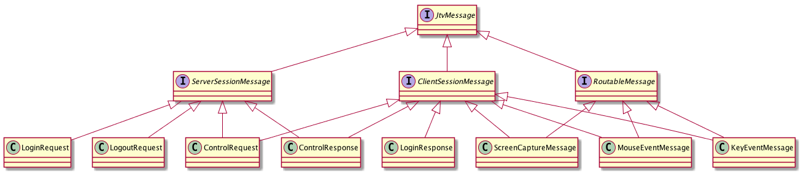
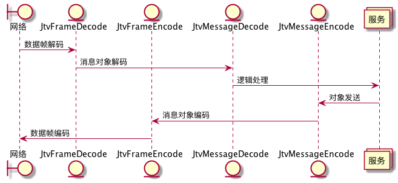

本文是Jtv的开发笔记。Jtv是一个远程桌面工具。
协议
为实现远程控制，我们需要处理两类通讯，客户端与服务器的通讯、客户端与客户端的通讯。
客户端与服务端的通讯主要有：
-
登录：客户端发送登录请求后，由服务端进行认证，并分配会话ID。
-
连接申请类：客户端创建新连接，通过这个连接发送连接申请，这个连接是源连接。服务端需要将这一申请转发给目标客户端，目标客户端接收到消息后，创建新连接至服务端，这个连接是目标连接。服务端在源连接与目标连接间建立绑定关系后，两个客户端间就可以实现点对点的通讯了。
客户端与客户端的通讯消息主要有以下几类：
-
文本消息传输：如错误信息，连接关闭通知等。
-
屏幕画面消息：被控端以一定的频度获取屏幕画面，并将它传输至控制端。控制端将其绘制到控制窗口中。
-
鼠标键盘事件：控制端在控制窗口中查看被控端画面，针对该画面操作的键盘和鼠标事件需要被传递到被控端，被控端根据这些事件进行事件的回放。
消息对象
为满足上述通讯要求，我们需要定义一套用于消息传输的对象。
|
|
这此类的关系如下：

我将消息分为三类：
-
ServerSessionMessage: 服务端处理的消息
-
ClientSessionMessage: 客户端处理的消息
-
RoutableMessage: 服务端负责路由的消息，即客户端间通讯的消息，服务端不做处理，只进行转发。
这些消息分类并不是绝对的，像ControlRequest这样的消息即要由服务端处理，也需要由被控的客户端接收处理。这些分类主要是为了能方便的进行消息类型判断。
网络层
为满足消息数据的传输，我们需要使用netty来完成下面这些任务：
-
自定义一套对象编码/解码器，处理消息数据的序列化和反序列化
-
自定义一套消息帧机制，处理tcp包粘包/拆包操作
-
编写服务端和客户端的
Handler
数据帧
由于Tcp协议只能保证消息的有序性，并不能保证消息的接收能与发送保持一致。因此，需要处理所谓的粘包和拆包。即，发送端需要将数据封装成数据帧格式，每个数据帧的头部记录下版本号、帧类型、帧长度和帧内容。接收端则需要按帧的格式进行读取，在处理帧读取时利用netty自带的一些工具，能达到事半功倍的效果。
我们将数据帧及其工厂类，定义为JtvFrame类和单例对象。类用于保存数据帧的数据，单例对象负责将JtvMessage对象转化为数据帧对象。
|
|
JtvFrame类中最重要的两个字段是contentLength和content。分别代表消息内容长度和被序列化的消息。后面进行拆包时依赖于这两个字段，才能读取到完整的数据包。
编码器和解决码器
如前面所述，我们需要两套编码/解码器，分别处理数据帧和消息对象。
数据帧的编码和解码
帧编码器
它主要负责将帧数据发送至网络通道：
|
|
帧解码器
继承netty提供的ReplayingDecoder能较方便的定义帧解码器。这个Decoder是为方便拆包而定义的，我们只需要提供一套状态代码，并根据读取的数据情况，推进状态就能实现拆包处理了。如果没有这个工具，我们就得根据接收的数据长度来处理缓冲区数据，这个操作繁琐且容易出错。
|
|
编写编码器的时候，使用了scala的模式匹配来进行状态检查，根据状态来确定所读取的帧字段。由于scala的模式匹配不能像Java的switch那样从上向下执行（不添加break的情况下），因此我们需要在每次匹配之后，重复调用decode以读取后续的字段数据，直到完成content字段的读取。
读取完content字段的数据后，就可以构建出完整的JtvFrame对象了。这个更对象添加至out集合并返回后，将会被更上层的消息对象解码器解码为消息对象。
消息对象的编码和解码
简单起见，消息对象的编码和解码我直接使用Java对象序列化机制。
|
|
Pipeline
定义完编码和解码器之后，需要将它们添加至netty的Pipeline中：
|
|
编码/解码器的工作时序如下：
